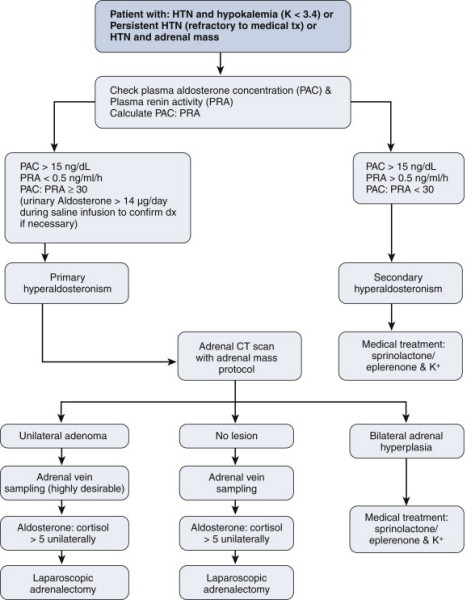

CONN'S SYNDROME
DEFINITION
A condition involving oversecretion of a salt and water regulating
hormone of the adrenal gland, classically leading to muscle and
sensation problems and high blood pressure, caused by a
hyper-functioning benign tumour.
top D I A B M
I M home
INCIDENCE
FM 2-5:1
Commonest in 30s-40s
In as many as 0.5-2% of unselected hypertensive patients
top D I A B M
I M home
AETIOLOGY
Adrenal adenoma, usually unilateral
Unclear what causes this to develop.
top D I A B M
I M home
BIOLOGICAL BEHAVIOUR
Pathophysiology
Tend to be small (<2 cm), slow growing, solitary, encapsulated
and
thoroughly benign lesions growing more commonly on the left.
Strangely, us. composed of zona fasciculata cells (zona glomerulosa
secretes
aldosterone normally), uniform in shape and size, mature.
Don't progress to
Ca
Secrete aldosterone -> K+ loss, Na+ retention in kidney
--> also resultant retention of H+ and Mg2+ due to Na+ exchange
effects.
top D I A B M
I M home
MANIFESTATIONS
1. Hypertension and hypokalaemia
2. Hypertension resistant to medical therapy.
Symptoms
K+ loss
Muscle weakness, tetany, paralysis (rare & extreme),
paraesthaesia,
headaches, visual disturbances.
Unlikely severe enough to cause arrhythmias
Na+ retention
Symptoms resultant of hypertension, e.g. headache especially on
walking, blurred vision, dizziness, needing to urinate at night.
Rarely severe enough to cause fits, severe headaches, epistaxis and
stroke.
Chronically it has end-organ effects.
H+ loss (rarely profound)
Slight alkalosis.
May contribute to tetany
Combined
Inability to concentrate urine -> polydipsia, polyuria
Signs
Hypertension usually diastolic and not usually severe
Check for neuro manifestations of hypokalaemia.
top D I A B M
I M home
INVESTIGATIONS
Investigations must differentiate hyperplasia (treated medically)
from adenoma (treated surgically)
1. Electrolytes
Depressed renin (also found in 25% of
essential hypertensives)
Elevated aldosterone (renin:aldosterone ratio most sensitive for
diagnosis)
- plasma aldosterone concentration > 15ng/dL
- suppressed renin concentration <0.5 ng/mL/hr
- ratio is 30 or greater; else secondary hyperaldosteronism
likely.
2. Imaging
If suspected primary hyperaldosteronism.
CT (spiral, thin 2mm slice protocol)
- accurate for detecting adenomas >0.5cm
--> benign: 10-15HU or lower on unenhanced CT; 10-min delayed CT
washout >50%; 15-min delayed CT washout >60%.
MRI: very accurate for lipid content of adenomas; accuracy of
greater than 90%.
3. Sampling
May need percutaneous
transfemoral bilateral adrenal vein catheterisation with vein
sampling
- may have a concurrent functioning microadenoma / hyperplasia in
other side in up to 20%
--> argues for routine use of adrenal vein sampling
--> if 5x higher on one side than other, diagnostic of unilateral
functioning adenoma.
Algorithm

top D I A B M
I M home
MANAGEMENT
Non-operative
: for bilateral adrenal hyperplasia
Aldosterone antagonists (spironolactone - 100-400mg
daily)
Other treatment for hypertensive control, especially Ca2+
channel blockers
Pre-op Work-up
Preop 3-5wk course of spironolactone 100-400mg/day and/or oral
potassium
Preop normalization of blood pressure is a good sign of likely
success from surgery
Spironolactone and potassium supplements should be stopped post-op.
Do not need steroid replacements for a unilateral procedure.
Operative
Adrenalectomy
top D I A B M
I M home